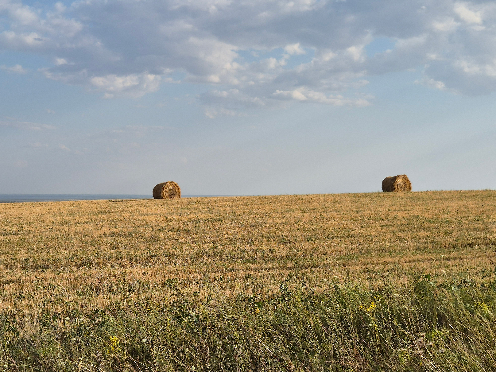
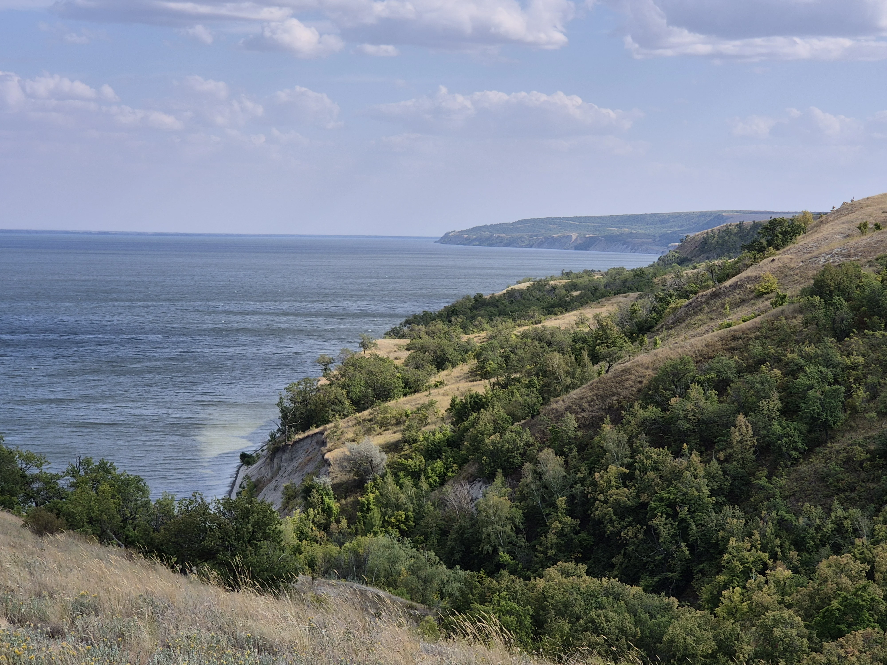
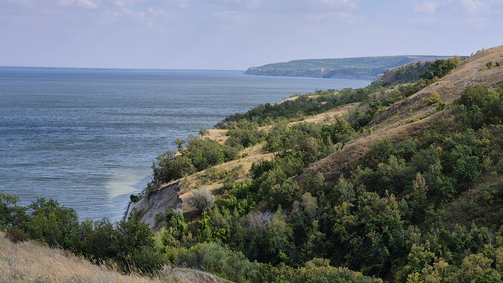
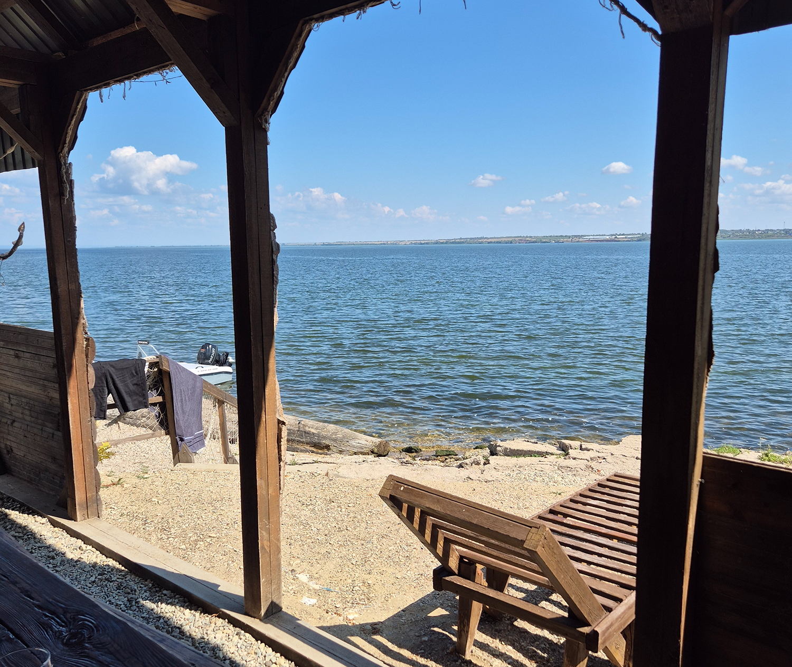
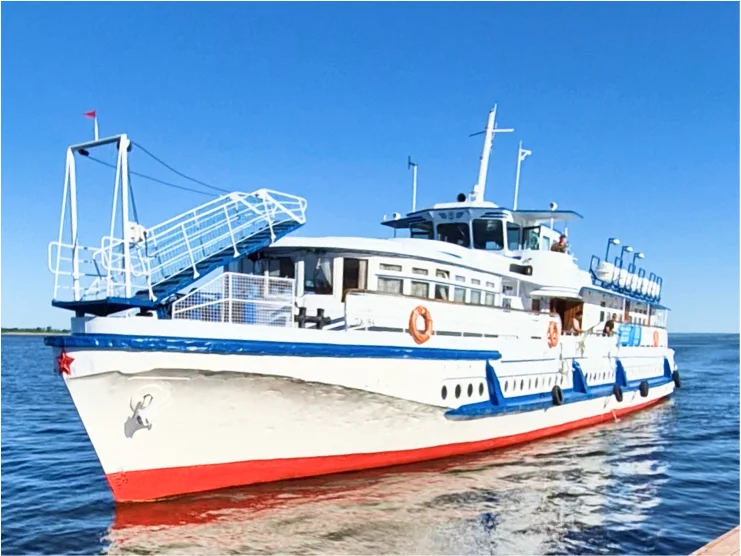

Забронировать
20-26 сентября 2026
Даты:
1/5
Сложность:
82 км
Расстояние:
10 из 10
Осталось мест:
Авторский поход
Поход проходит по югу Саратовской области, вдоль высокого берега Волги, величайшей реки Европы. Через исторические сёла основанные в 16-17 веке первыми колонистами. Поход медитация. Поход у воды. Тихий плеск волны о меловые берега. Бескрайняя широкая река, меняющая цвет в зависимости от освещения. Дикие каменистые пляжи. Свист сурка Байбака и свежий утренний бриз на рассвете. Сложная много оползневая береговая линия по которой мы пойдём, позволила сохранить первозданную степь от разрушающего воздействия сельского хозяйства. Волжские балки или "антигоры" составляют ещё одну часть похода. Титанические овраги тянущиеся на многие километры имеют отвесные стены высотой с десяти этажный дом. Они настолько масштабны , что имеют собственные имена. Густые леса обрамляющие овраги , служат домом многочисленным животным. Мы проводим всего три похода в год по одному на каждый сезон, что бы показать разнообразие природы Волжской природы в наилучшие месяцы года Весна пора цветения степи. Лето лучшее время для купания. Осень время ярких красок для идеальных для фотографий . Поход проходит при сопровождении машины поддержки и мобильного кемпинга. Всё что вам нужно взять в дорогу, это личные вещи по сезону и хорошее настроение.





Подробнее
Для кого поход
Маршрут отлично подойдёт как новичкам в туризме, так и опытным путешественникам, желающим не торопиться, а исследовать красоту волжских берегов. При этом наш путь не прост: ежедневно преодолеваем живописные балки ("антигоры"), сложный рельеф меловых берегов и проходим через исторические сёла, основанные в 16-17 веках.
Поход проходит по югу Саратовской области, вдоль высокого берега Волги, величайшей реки Европы. Через исторические сёла основанные в 16-17 веке первыми колонистами. Поход медитация. Поход у воды. Тихий плеск волны о меловые берега. Бескрайняя широкая река, меняющая цвет в зависимости от освещения.
Волжские балки или "антигоры" составляют ещё одну часть похода. Титанические овраги тянущиеся на многие километры имеют отвесные стены высотой с десяти этажный дом. Они настолько масштабны, что имеют собственные имена. Густые леса обрамляющие овраги, служат домом многочисленным животным.
Мы проводим всего три похода в год по одному на каждый сезон, чтобы показать разнообразие Волжской природы в наилучшие месяцы года. Весна - пора цветения степи. Лето - лучшее время для купания. Осень - время ярких красок, идеальное для фотографий. Поход проходит при сопровождении машины поддержки и мобильного кемпинга. Всё что вам нужно взять в дорогу - это личные вещи по сезону и хорошее настроение.
Программа по дням
-
С. Золотое: погружение в атмосферу волжской деревни. В 13:00 выезд из Саратова.После двухчасовой поездки на микроавтобусе вы прибудете в старинное село Золотое.
Размещение в отреставрированных избах, прогулка по уютным улочкам, осмотр храма 1834 года. Вечером в программе баня, ужин и чаепитие с рассказами от гида.1.5 часа
-

Путь через луга и овраги, первые панорамные виды на Волгу. Прогулка по селу Дубовка с его резными фасадами домов. Ночёвка на пляже в заливе Нижний Перелазный: палаточный лагерь, ужин у костра .
20 км 550 м 530 м 5 ч
-

Залив Нижний Перелазный — Пионерский залив . Маршрут вдоль отвесных берегов. Масштабные виды Волги и дикие пляжи. Вечером дойдём до Пионерского залива. Здесь ночуем в палатках, ужин и вечер у костра.
20 км 400 м 380 м 6 ч
-

Пионерский залив — с. Ахмат Встреча восхода солнца над Волгой.Дубовые леса и дикая природа. Ахматская гора и панорама на 40 км . Размещение в глэмпинге в с. Ахмат «Парус», ужин и баня. Закат у воды.
15 км 600 м 700 м 5 ч
-

Ахмат: день отдыха. Свободное время: купание, сапборды, катамараны, прогулки по селу или отдых на шезлонге. Возможна рыбалка на катере и баня. Вечер — ужин и закат у воды.
-

Ахмат — Мордово. Первозданная природа степи и сурки Байбаки. Завораживающий рельеф Мордовского оползня возрастом до 5,5 млн лет и превосходные галечные пляжи. Ночёвка в палатках у залива " Маяк Спиркин". Вечер у костра с рассказами о мордовской культуре.
14 км 570 м 590 м 5 ч
-

Мордово — Сосновка - Сининькие — Саратов. Финальный день среди холмов и галечных пляжей. Запах степных трав и панорамы берега на обратной дороги до Саратова на теплоходе.
15 км 642 м 659 м 6 ч 3.5 ч
Безопасность мой приоритет
Разведанный маршрут.
Я организую походы только в местности которую хорошо знаю сам. Всё продумано до мелочей.
Связь по рации с мобильным лагерем.
Поход всегда зарегистрирован в мчс. Знание местных жителей, способных прийти на помощь в случаи ЧС.
Поход всегда зарегистрирован в мчс.
Знание местных жителей, способных прийти на помощь в случаи ЧС.
Первая помощь
Инструктор проводник прошёл курс базовой и расширенной первой помощи в Красном Кресте.
Страховка На каждого участника оформляется страховка
Перед походом группа проходит инструктаж по технике безопасности в данном районе. Никакой" воды", только необходимая информация.
Проводники

Владимир Сергиенко
Сертифицированный инструктор проводник. Два года прожил в Якутской тайге. На протяжении 4 лет принимал участие в создании Кавказской тропы. Прошёл пешком по горам Кавказа более 3500 км. Создатель пешеходной тропы Волга море.

Руслан Янгаличин
Автор маршрута "Волга море". Знакомство с природой начинал в якутской тайге и в ямальской тундре. Но настоящей страстью стала природа родного края - Поволжье, с его историей и уникальной атмосферой. Готов поделиться с путешественниками не только видами и маршрутом, но и ароматами блюд полевой кухни и историей нашей земли!
Отзывы участников
-
Волга-Море
На Кольском полуострове и в осеннем походе я была впервые. Полюбить и проникнуться Севером удалось благодаря Паше и Ане. Организация всех этапов похода уровня профи. Полное сопровождение и вовлеченность от момента планирования личных сборов, консультации по снаряжению до финального ужина путешествия.

Михаил, 2025
-
Волга-Море
На Кольском полуострове и в осеннем походе я была впервые. Полюбить и проникнуться Севером удалось благодаря Паше и Ане. Организация всех этапов похода уровня профи. Полное сопровождение и вовлеченность от момента планирования личных сборов, консультации по снаряжению до финального ужина путешествия.

Михаил, 2025
-
Волга-Море
На Кольском полуострове и в осеннем походе я была впервые. Полюбить и проникнуться Севером удалось благодаря Паше и Ане. Организация всех этапов похода уровня профи. Полное сопровождение и вовлеченность от момента планирования личных сборов, консультации по снаряжению до финального ужина путешествия.

Михаил, 2025
-
Волга-Море
На Кольском полуострове и в осеннем походе я была впервые. Полюбить и проникнуться Севером удалось благодаря Паше и Ане. Организация всех этапов похода уровня профи. Полное сопровождение и вовлеченность от момента планирования личных сборов, консультации по снаряжению до финального ужина путешествия.
Михаил, 2025
-
Волга-Море
На Кольском полуострове и в осеннем походе я была впервые. Полюбить и проникнуться Севером удалось благодаря Паше и Ане. Организация всех этапов похода уровня профи. Полное сопровождение и вовлеченность от момента планирования личных сборов, консультации по снаряжению до финального ужина путешествия.
Михаил, 2025
Смотреть все отзывы
Цена 40 000 ₽
Входит в цену
Что входит в стоимость тура:
- Трансфер Саратов – Золотое
- Проживание в с. Золотое
- Баня в с. Золотое (3 часа)
- Перевозка снаряжения по маршруту
- Общее групповое снаряжение
- Палатка, раскладная кровать, спальный мешок+вкладыш
- Питание на маршруте (3 раза в день)
- Услуги повара
- Услуги гида-инструктора (реестровый № инструктора-проводника 3938)
- Проживание в глэмпинге
- Баня+чан в глэмпинге (2 часа)
- Трансфер Сосновка – Саратов
Не входит в цену
Что не входит в стоимость тура:
- Билеты до Саратова и обратно
- Трансфер из Аэропорта «Гагарин» в Саратов
- Аренда сапборда, каяка в с. Ахмат
- Баня в с. Ахмат (глэмпинг) на второй день пребывания (по желанию)
- Рыбалка с гидом в с. Ахмат (глэмпинг) (по желанию)
Почему стоить приехать
Справлюсь ли я с нагрузкой в походе?
Это во многом зависит от вашего опыта, физической подготовки и психологического настроя. Внимательно изучите программу — у каждого похода есть своя категория сложности, указаны дневные дистанции и набор высоты.
Мы внимательно подходим к каждой заявке — советуемся с проводником и подбираем для вас подходящий маршрут. Если вы регулярно гуляете и ведете активный образ жизни — вы справитесь отлично!
Сколько весит рюкзак?
В среднем — от 15 до 21 килограмма. У девушек рюкзаки обычно легче, чем у мужчин. Вес складывается из ваших личных вещей и снаряжения, которое выдаём мы: палатка, спальник, коврик и часть продуктов.
Не пугайтесь — правильно подобранный рюкзак распределяет нагрузку так, что нести его гораздо легче, чем кажется. В нашем походе "Волга Море" вас сопровождает машина поддержки, поэтому ваш рюкзак будет весить всего 5-10 кг!
Как быть с гигиеной в походе?
На маршруте мы умываемся в чистых ручьях и родниках почти каждый день. Вода в Волге и её притоках теплая и отлично подходит для купания!
Для туалета у проводников есть всё необходимое — всё покажем и расскажем на месте. Рекомендуем брать с собой влажную туалетную бумагу и экологичные средства гигиены. Бумагу не закапываем, а забираем с собой в специальные пакеты.
Как обстоят дела с питьевой водой?
На каждом маршруте мы заранее продумываем, где будем набирать воду. Чаще всего — это родники и чистые ручьи. Проводники всегда подскажут, из каких источников безопасно пить.
Важно пить регулярно — не дожидаясь сильной жажды. Если нужно пополнить воду или сделать паузу, просто скажите — мы всегда найдём удобный момент для остановки.
Есть ли на маршруте дикие животные? Нужно ли брать средства защиты?
Вероятность встречи с медведем или другим диким животным есть, но бояться этого не нужно. У каждого проводника есть средства защиты — ракетница и фальшфейер, покупать их самостоятельно не нужно.
Медведь — очень скрытное животное, которое не ищет встречи с людьми. Главное — внимательно следуйте указаниям проводников и не храните еду в палатке.
Как организовано питание во время похода?
Проводники заранее покупают продукты и составляют раскладку. Утром и вечером — полноценные горячие приёмы пищи, а днём — сытные перекусы с горячим чаем.
Основу походной кухни составляют крупы, макароны и бобовые. Мы дополняем блюда мясом, сыром и овощами. Если у вас есть аллергия или особые предпочтения — сообщите заранее, мы адаптируем меню.